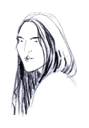

Fraszki o nas
Od autorki:
Trochę się nawymądrzałam,
pisząc o Was fraszki
A o sobie nie pisałam,
bo temat nieważki.
Kogo uraziłam
przepraszam serdecznie,
bo nie zawsze „złożyć”
uda mi się grzecznie
wierszyk czy też fraszkę,
poemacik mały.
pisząc o Was fraszki
A o sobie nie pisałam,
bo temat nieważki.
Kogo uraziłam
przepraszam serdecznie,
bo nie zawsze „złożyć”
uda mi się grzecznie
wierszyk czy też fraszkę,
poemacik mały.
Czasem są to prawdy,
czasem dyrdymały.
Nieraz to wynika
z licentia poetica.
czasem dyrdymały.
Nieraz to wynika
z licentia poetica.
Karykatury chórzystów
narysowała
Ksenia Berezowska
narysowała
Ksenia Berezowska
Więc mimo, że wszystkich
poddałam tej próbie
szczerze chcę zapewnić,
że bardzo Was lubię.
poddałam tej próbie
szczerze chcę zapewnić,
że bardzo Was lubię.
Nasza Dyrygentka cierpliwą kobitą
za to się należy Jej - SANTO SUBITO!
za to się należy Jej - SANTO SUBITO!
ZAGADKA [Elżbieta Achinger]
z wykształcenia - prawnik
z pasji - chórzystka
z wyboru - Prezeska
z natury - społecznica
z potrzeby działania - polityk
Kto to wszystko łączy ? oto jest zagadka
z pasji - chórzystka
z wyboru - Prezeska
z natury - społecznica
z potrzeby działania - polityk
twórca UTW
wydawca wielickiej gazety
z konieczności - wzorowa żona i matkawydawca wielickiej gazety
Kto to wszystko łączy ? oto jest zagadka
[Adam Kurek]
Dobrze się dzieje,
gdy Kurek zapieje.
gdy Kurek zapieje.
Adam nasz w chórze - nigdy passé!
Wysyła maile i SMS-y,
zbiera na siebie wszelakie stresy,
gdy tworzy nasze tournee.
Jest w tym, co robi, niezastąpiony.
Trzeba go więc hołubić,
bo mi przyznacie, że taki talent
nie może nam się zagubić.
Wysyła maile i SMS-y,
zbiera na siebie wszelakie stresy,
gdy tworzy nasze tournee.
Jest w tym, co robi, niezastąpiony.
Trzeba go więc hołubić,
bo mi przyznacie, że taki talent
nie może nam się zagubić.
Modlitwa do Ani Klimczyk
(nasza księgowa)
(nasza księgowa)
Aniu – Klimczyku nasz
ty się na „słupkach” znasz
więc jeśli tylko da się
pomnóż pieniążki w kasie.
ty się na „słupkach” znasz
więc jeśli tylko da się
pomnóż pieniążki w kasie.
Małgosia Westrych
(pianistka - akompaniatorka)
(pianistka - akompaniatorka)
Nie jest to żadną hecą,
że jak gra, to iskry lecą
z klawiatury ,oczywiście,
jak przystało Artyście.
że jak gra, to iskry lecą
z klawiatury ,oczywiście,
jak przystało Artyście.
Choć postura nieco mała,
ma zadatki generała,
który dniami i nocami
dzielnie walczy z klawiszami.
Agnieszka Korczyńska
(pianistka - akompaniatorka)
(pianistka - akompaniatorka)
Na co dzień skromna i cicha – wiecie?
A wulkan energii – na parkiecie !
A wulkan energii – na parkiecie !
[Basia Borowiec]
Śpiewa, maluje,
w czwartki gości przyjmuje...
Kto wie niech zgaduje.
w czwartki gości przyjmuje...
Kto wie niech zgaduje.
[Małgosia Achinger i M. Włodarczyk]
W chórze dwie Małgosie mamy,
obie muzykalne „w parze”,
Jedna gra na wiolonczeli
druga - na gitarze.
obie muzykalne „w parze”,
Jedna gra na wiolonczeli
druga - na gitarze.
[Jasia Bajorek]
Jasia się zagłębia w nutach
kiedy nie dzierga na drutach.
kiedy nie dzierga na drutach.
[Marta Budzowska]
Dla naszej „altowej” Marty,
oprócz chóru, ważne narty.
Marta jeździ nie na żarty,
bo z niej narciarz jest uparty.
oprócz chóru, ważne narty.
Marta jeździ nie na żarty,
bo z niej narciarz jest uparty.
[Marek Bzowski]
Marku! Ja Ciebie cenię
za łagodne usposobienie,
za Twoje częste „zapomnienie”
i samochodem wożenie.
za łagodne usposobienie,
za Twoje częste „zapomnienie”
i samochodem wożenie.
[Zofia Cichostępska]
Cichostępska Sophie
Prawda, że ładnie brzmi?
Ale ładniej brzmi Jej śmiech,
bowiem śmieje się – za trzech!
Na próbach jest – „mniej niż więcy”,
R a z - na parę miesięcy.
Prawda, że ładnie brzmi?
Ale ładniej brzmi Jej śmiech,
bowiem śmieje się – za trzech!
Na próbach jest – „mniej niż więcy”,
R a z - na parę miesięcy.
Roztargniona Zosia
Gdy wszyscy ćwiczyli Halleluję Haendla,
Zosia śpiewała coś innego.
Wnet wyszło na jaw, że zamiast Haendla
otwarła Twardowskiego.
Lecz Zosia nie smuci się z tego powodu
woła Alleluja !....i do przodu !
Zosia śpiewała coś innego.
Wnet wyszło na jaw, że zamiast Haendla
otwarła Twardowskiego.
Lecz Zosia nie smuci się z tego powodu
woła Alleluja !....i do przodu !
[Józef Gałoński]
Był - Guru naszego chóru.
[Danusia Góra]
Lepszych dla Danusi nie masz referencji:
100% f r e k w e n c j i !!!
100% f r e k w e n c j i !!!
[Bogusia Grabowska]
Jest jeszcze jedna NOWA
a że o niej nic nie wiem,
nie napiszę słowa.
Jak ją poznam - może?
jakąś fraszkę stworzę.
a że o niej nic nie wiem,
nie napiszę słowa.
Jak ją poznam - może?
jakąś fraszkę stworzę.
[Halinka i Jurek Greczkowscy]
Wszyscy znają z tego „Greczki”,
że robią pyszne wódeczki.
że robią pyszne wódeczki.
[Bogusia i Lucynka Grochal]
W chórze mamy dwie Grochale
ale się nie mylą wcale,
Każda inna, gdzie indziej śpiewa,
jedna z prawa, druga z lewa.
ale się nie mylą wcale,
Każda inna, gdzie indziej śpiewa,
jedna z prawa, druga z lewa.
Gosia Grzesik
Nie znam jeszcze dobrze Gosi
ale skoro o wiersz prosi,
jedną strofkę Jej poświęcę.
Później - dodam trochę więcej.
ale skoro o wiersz prosi,
jedną strofkę Jej poświęcę.
Później - dodam trochę więcej.
[Janusz Grzesz]
JANUSZ nie GRZESZ!
gdy jesteś z nami,
my - piosenek twych fanami
(zwłaszcza tej:
„Przed 50-tką babki się nie liczą”)
gdy jesteś z nami,
my - piosenek twych fanami
(zwłaszcza tej:
„Przed 50-tką babki się nie liczą”)
[Jacek Jastrzębski]
Pierwsza klasa
mieć takiego „basa”.
mieć takiego „basa”.
[Józef Jochymek
i
Józef Szerłomski]
i
Józef Szerłomski]
Starsi panowie,
starsi panowie,
starsi panowie dwaj.
Już szron na głowie
i nie to zdrowie
a w sercu ciągle maj.
(aut. Przybora, Wasowski)
starsi panowie,
starsi panowie dwaj.
Już szron na głowie
i nie to zdrowie
a w sercu ciągle maj.
(aut. Przybora, Wasowski)
Ewa Murzyn, Ania Ptasznik, Ania Rutka, Iza Kaczmarczyk
Przybyły do nas młode panienki.
Panowie zmiękli patrząc na wdzięki
ich i urodę.
Zmęczeni jednak zalotów grą,
z żalem stwierdzają prawdziwość tą:
„Dla nas za młode”.
P.s.
Chyba, że Viagra
na emocjach zagra.
Panowie zmiękli patrząc na wdzięki
ich i urodę.
Zmęczeni jednak zalotów grą,
z żalem stwierdzają prawdziwość tą:
„Dla nas za młode”.
P.s.
Chyba, że Viagra
na emocjach zagra.
[Marysia Kalińska]
Nieczęsto się zdarza
mieć w chórze dziennikarza.
Pisz o nas Marysiu w prasie,
bo reklama nam przyda się.
mieć w chórze dziennikarza.
Pisz o nas Marysiu w prasie,
bo reklama nam przyda się.
[Aga Zięba , Kinga Klima]
albo są albo ich ni ma !
[Ania Klima]
Krótko rzec można – ANKA
to fajna koleżanka.
to fajna koleżanka.
[Kłyszewscy - Grażyna i Andrzej]
Z tego są znani,
że wiecznie zakochani.
że wiecznie zakochani.
[Joanna Korab-Chrzanowska i Julia Korab-Chrzanowska]

Joasia Korab- Chrzanowska z córką
sopranów podpórką.
sopranów podpórką.
[Anna Krawiec]
Ania Krawiec „krawcową”
nie tylko „z męża” (normalnie)
ale też „po fachu” - od kiedy ma szwalnie.
nie tylko „z męża” (normalnie)
ale też „po fachu” - od kiedy ma szwalnie.
Ania Krawiec (na bis)
W chórze śpiewa ładnie.
W mowie, wyraża się dosadnie
(nie tyle kwieciście, co zajebiście).
W chórze śpiewa ładnie.
W mowie, wyraża się dosadnie
(nie tyle kwieciście, co zajebiście).
[Anna Król]
Danusia Król-Bugaj
Danusia Król-Bugaj
Wypadło takoż naszej Danusi
wcielić się znowu w rolę „mamusi”
i teraz dziatki w swym domu chowa
a w chórze śpiewa – druga „Kólowa”.
wcielić się znowu w rolę „mamusi”
i teraz dziatki w swym domu chowa
a w chórze śpiewa – druga „Kólowa”.
[Zenon Kulik]
Wierszyk zamiast fraszki
Zenek taki trochę „z cicha pęk”
ale ma to swój niepowtarzalny wdzięk.
Taki niby cichy, jak ta mysz,
lecz jak powie coś, to powie – sam pan wisz.
Z fachu, to on muzyk i artysta.
Na prywatnie – multiinstrumentalista.
Jest wszechstronnie i bogato wykształcony,
bliskie mu laptopy, kompy i smartfony.
W wolnych chwilach (wcale nie jest to pokuta)
zrobi sobie ciepły swetr na grubych drutach.
Jak się dorwie do organów podczas mszy,
to świątynia w swych posadach niemal drży.
Człek-orkiestra tak o Zenku rzec by można,
z pochwałami jednak muszę być ostrożna
aby Zenek z takiej glorii, z takiej chwały
nagle nam nie zrobił się zarozumiały.
Zenek taki trochę „z cicha pęk”
ale ma to swój niepowtarzalny wdzięk.
Taki niby cichy, jak ta mysz,
lecz jak powie coś, to powie – sam pan wisz.
Z fachu, to on muzyk i artysta.
Na prywatnie – multiinstrumentalista.
Jest wszechstronnie i bogato wykształcony,
bliskie mu laptopy, kompy i smartfony.
W wolnych chwilach (wcale nie jest to pokuta)
zrobi sobie ciepły swetr na grubych drutach.
Jak się dorwie do organów podczas mszy,
to świątynia w swych posadach niemal drży.
Człek-orkiestra tak o Zenku rzec by można,
z pochwałami jednak muszę być ostrożna
aby Zenek z takiej glorii, z takiej chwały
nagle nam nie zrobił się zarozumiały.

Jan Łyczewski
Na Warszawiaka
Czy to wybór ? Czy banicja?
zamiast Warszawy – Galicja.
Skoroś się zdecydował być w naszym zespole
Musisz zamiast „na dwór” mówić: „iść na pole”.
Czy to wybór ? Czy banicja?
zamiast Warszawy – Galicja.
Skoroś się zdecydował być w naszym zespole
Musisz zamiast „na dwór” mówić: „iść na pole”.
[Zbyszek i Józef Markielowscy]
Markielowscy bracia dwaj
znakomici są „do jaj”.
Do bitki i do wypitki.
Zawsze łasi na kobitki.
znakomici są „do jaj”.
Do bitki i do wypitki.
Zawsze łasi na kobitki.
[Magda Mazurek-Juszczyk]
Magda Mazurek długo z nami była
lecz „wyszła” za mąż i..... nie wróciła.
Teraz się zjawia ale chodzi „w kratkę”,
bo pilnuje męża i ciepłą posadkę.
lecz „wyszła” za mąż i..... nie wróciła.
Teraz się zjawia ale chodzi „w kratkę”,
bo pilnuje męża i ciepłą posadkę.
Kazimierz Nowak, Szymon Nowak
Dwóch NOWAKÓW w chórze,
to wyzwanie duże.
Obaj w basach - na dobitkę.
Jeden wąs ma, drugi „kitkę”.
to wyzwanie duże.
Obaj w basach - na dobitkę.
Jeden wąs ma, drugi „kitkę”.
Anna i Roman Pieczarowie
Ania kocha się stroić,
a więc kocha to, co kupuje
A także kocha Romka,
który to finansuje.
a więc kocha to, co kupuje
A także kocha Romka,
który to finansuje.
Mariola Pięch
Czyżbyś Mariolko miła
kiedyś tak nabroiła,
że teraz w ramach pokuty
musisz kserować nam nuty?
Przeciwnie! - ja się tym chlubię,
że się poświęcać lubię.
kiedyś tak nabroiła,
że teraz w ramach pokuty
musisz kserować nam nuty?
Przeciwnie! - ja się tym chlubię,
że się poświęcać lubię.
Kazimierz Ptasznik
Kazio, jak meteor,
raz jest, raz go ni ma.
Trudno nam wyczaić
jaka to przyczyna.
raz jest, raz go ni ma.
Trudno nam wyczaić
jaka to przyczyna.
[Kasia Puch]
Kobieto ! - „ty puchu marny”
powiedział kiedyś ktoś,
ale to był marny gość,
bo nasz PUCH, co dał mu Los,
ma przepięknie brzmiący głos.
powiedział kiedyś ktoś,
ale to był marny gość,
bo nasz PUCH, co dał mu Los,
ma przepięknie brzmiący głos.
[Bogusia Senderska]
Z trudem próbuje
dokonać tej sztuki,
by czas dzielić między
męża, chór i wnuki.
dokonać tej sztuki,
by czas dzielić między
męża, chór i wnuki.
[Joanna Schindler]
Joasia Schindler taki talent ma,
że wszystkie słowa do piosenek zna
i na biesiadach głośno wyśpiewuje
zwłaszcza, gdy wcześniej gardło wysmaruje.
że wszystkie słowa do piosenek zna
i na biesiadach głośno wyśpiewuje
zwłaszcza, gdy wcześniej gardło wysmaruje.
[Danusia Sosin]
Sami przyznacie,
wiernie trwa przy
Cameracie.
wiernie trwa przy
Cameracie.
[Tadzio Stalmach]
Tadzio zjawia się i znika.
Dziwna ta jego taktyka
A szkoda, gdyż jego bas
pasowałby nam w sam raz.
Dziwna ta jego taktyka
A szkoda, gdyż jego bas
pasowałby nam w sam raz.
[Tadeusz Sykta]
1) artysta
2) chórzysta
3) akordeonista
i wciąż - wierny mąż!
2) chórzysta
3) akordeonista
i wciąż - wierny mąż!
[Bożena Szklarz]
W chórze nowa twarz
- to Bożena Szklarz.
- to Bożena Szklarz.
[Jasia Tańcula]
Żartują z tego, że lubi jeść.
A ja też lubię – i cześć!
Bo w tej sprawie żyją prawdy dwie,
Jedni się przyznają, drudzy – nie.
A ja też lubię – i cześć!
Bo w tej sprawie żyją prawdy dwie,
Jedni się przyznają, drudzy – nie.
[Marek Turchan]
Marek Turchan co dzień musi
zbierać jaja od swych strusi.
Do jaj musi mieć tragarzy
bowiem jajo kilo waży!
I codziennie ma tych jaj
tyle co na cały kraj.
A ich liczba się podwaja
bo i w chórze robi „jaja””.
zbierać jaja od swych strusi.
Do jaj musi mieć tragarzy
bowiem jajo kilo waży!
I codziennie ma tych jaj
tyle co na cały kraj.
A ich liczba się podwaja
bo i w chórze robi „jaja””.
[Ela Tylek]
Wielką energią, co w Niej kipi – dosłownie,
mogłaby zasilić małą elektrownię.
mogłaby zasilić małą elektrownię.
[Olga Wielgus-Wosatko]
Śmieje się: tu i teraz
zawsze i wszędzie
dużo i głośno
niewinnie i sprośno.
Dzięki temu – kruca!
ma „duże płuca”.
zawsze i wszędzie
dużo i głośno
niewinnie i sprośno.
Dzięki temu – kruca!
ma „duże płuca”.
[Ania Włodarczyk]
Najpierw u nas śpiewała
Potem nas olała.
Teraz się pojawiła.
Czyś ty z nas nie zadrwiła?
Potem nas olała.
Teraz się pojawiła.
Czyś ty z nas nie zadrwiła?
[Małgosia Wysocka-Cebula]
Gosia dała się poznać
jako niestrudzony
twórca i operator
„camerackiej” strony.
bawi, uczy .... w sumie:
można rzec, że Gosia
robi to co umie.
jako niestrudzony
twórca i operator
„camerackiej” strony.
Na tym polu działa,
jest w tym doskonała.
Dzięki pracy i chęci
strona świetnie „się kręci”,
żyje, informujejest w tym doskonała.
Dzięki pracy i chęci
strona świetnie „się kręci”,
bawi, uczy .... w sumie:
można rzec, że Gosia
robi to co umie.
A że umie, nikt nie ma
żadnych wątpliwości.
A więc SZACUN dla Gosi
zasług i zdolności.
żadnych wątpliwości.
A więc SZACUN dla Gosi
zasług i zdolności.
Czy jej ręce leczą
każdą przypadłość człowieczą?
Mnie pomogły – wyznam szczerze,
choć w czary nie wierzę.
każdą przypadłość człowieczą?
Mnie pomogły – wyznam szczerze,
choć w czary nie wierzę.
[Ewa Roeske-Tracz]
Taki jak ja, fraszkopisarz
zawsze spodziewać się musi,
że ktoś, za swoją fraszkę,
w rewanżu go udusi.
W satyrze jest tak, niestety,
(choć komuś przykrość to sprawi),
że „cudze” - najlepiej bawi.
więc.......
By nie zrobił się „fight”
dałam fraszki w wersji „light”.
Jednak skusił mnie czart
stworzyć także wersję „hard”
Tę jednak – dla zasady
chowam do szuflady.
z wyjątkiem tej fraszki
O sobie Mam już lat 60 „plus”, Nie zaliczam się do „kóz”, Mogę więc założyć „club” co najwyżej „starych szkap”.
zawsze spodziewać się musi,
że ktoś, za swoją fraszkę,
w rewanżu go udusi.
W satyrze jest tak, niestety,
(choć komuś przykrość to sprawi),
że „cudze” - najlepiej bawi.
więc.......
By nie zrobił się „fight”
dałam fraszki w wersji „light”.
Jednak skusił mnie czart
stworzyć także wersję „hard”
Tę jednak – dla zasady
chowam do szuflady.
z wyjątkiem tej fraszki
O sobie Mam już lat 60 „plus”, Nie zaliczam się do „kóz”, Mogę więc założyć „club” co najwyżej „starych szkap”.
„Francowate” fraszki ( z tournee po Francji)
Dwoił się i troił,
by być z nami wszędzie.
Jako tłumacz – poliglota,
w pierwszym rzędzie.
Jako przewodnik,
organizator, VIP-ek
w sumie: niezastąpiony
Monsieur Filipek.
kwartet nie do wytrzymania
jeśli o energię chodzi.
Im dorównać nawet młodzi
nie są w stanie,
bo te Panie – każdy wie
mają wszak ADHD.
Widzę w chórze, na dodatek,
jeszcze kilka kandydatek.
Strach pomyśleć co się stanie,
jak rozkręcą się te Panie,
Wtedy rada dobrze znana
do herbatki w a l e r i a n a !!!
jak falujący, ponętny biust Zosi.
(z racji na swoją posturę)
Nie opanowawszy nutek
nie mógł śpiewać
z naszym chórem.
Lecz, że ma do handlu spryt,
sprzedał dla nas mnóstwo płyt.
tak skrzypaczki, jak flecistki,
uniosły występów brzemię,
wprawiając widzów w zdumienie.
(panny Korczyńskie,
Dominika Popiołek,
Marysia Wojcieszko)
– każdy powie.
Ale Józiowi
co innego w głowie.
Raz po raz, z humorem,
kielich wina wznosi
i znika w objęciach
naszej pani Zosi.
napisik „ clik – clik”
więc Jurek , w ramach protestu,
z naszą Zosią ...... znikł.
by być z nami wszędzie.
Jako tłumacz – poliglota,
w pierwszym rzędzie.
Jako przewodnik,
organizator, VIP-ek
w sumie: niezastąpiony
Monsieur Filipek.
***
Iza, Ela, Aga, Aniakwartet nie do wytrzymania
jeśli o energię chodzi.
Im dorównać nawet młodzi
nie są w stanie,
bo te Panie – każdy wie
mają wszak ADHD.
Widzę w chórze, na dodatek,
jeszcze kilka kandydatek.
Strach pomyśleć co się stanie,
jak rozkręcą się te Panie,
Wtedy rada dobrze znana
do herbatki w a l e r i a n a !!!
***
Nic tak temperatury nie podnosijak falujący, ponętny biust Zosi.
***
Paweł - Pawarottim zwany,(z racji na swoją posturę)
Nie opanowawszy nutek
nie mógł śpiewać
z naszym chórem.
Lecz, że ma do handlu spryt,
sprzedał dla nas mnóstwo płyt.
***
Nasze najmłodsze Artystki,tak skrzypaczki, jak flecistki,
uniosły występów brzemię,
wprawiając widzów w zdumienie.
(panny Korczyńskie,
Dominika Popiołek,
Marysia Wojcieszko)
***
Patrząc na Józia – Senior– każdy powie.
Ale Józiowi
co innego w głowie.
Raz po raz, z humorem,
kielich wina wznosi
i znika w objęciach
naszej pani Zosi.
***
Miała Halinka na piersiachnapisik „ clik – clik”
więc Jurek , w ramach protestu,
z naszą Zosią ...... znikł.
***
Po 37 latach, pełni elegancji,
odbyli, z chórem, podróż poślubną do Francji.
Szczęśliwie im się zbiegły dwie okoliczności,
mieli, jak na weselu, jadło, wino i gości.
(i ten cały „bajer” całkowicie za frajer).
też zabawie służy.
Jak majtek na okręcie, poruszasz się śmiało -
by nam „szumiało”.
Tym sposobem jesteś cały czas zajęty -
dawkując „procenty”.
PS.
Acha ! Doszło do nas, całkiem przypadkiem,
żeś znów został dziadkiem !
Parlez-vous francais,
Oh mon Dieu !, jamais,
S'il vous plait, Adieu !
Tyle pamiętam – daję słowo.
Jestem językową niemową.
(w tym względzie – oczywiście,
w „polskim” wyrażam się kwieciście)
Za to Ewie Murzyn, wyrazy uznania,
za francuskie zapowiedzi
naszego śpiewania.
(dialog )
Ewa: Nowa fryzura – skądże to?
Agnieszka: Od Antoine'a, kobieto!
Wiozę wszak z Francji
szczyptę elegancji.
Zosi przypisano nową funkcję w chórze,
gdy butem wdepnęła w jakieś kupsko duże.
I choć but czyściła, chcąc się pozbyć gówna
i tak będą na nią wołać – SOŁTYSÓWNA.
Ci, co pragnęli miłości wiele,
miast drobnych centów,
wrzucali portfele.
(zwiedzanie miasta motorówkami)
Wszystko było fajne – ale
? Najlepszy był śpiew w....kanale!
Żabojad tak się radował,
że mało nas nie wykiprował.
tylko dla koneserów!
Profan więc, kto twierdzi,
że ser taki śmierdzi !!!!
(po reakcji w autobusie,
na otwieranie lodówki,
większość - to profani !)
odbyli, z chórem, podróż poślubną do Francji.
Szczęśliwie im się zbiegły dwie okoliczności,
mieli, jak na weselu, jadło, wino i gości.
(i ten cały „bajer” całkowicie za frajer).
***
Adam! Twoje poświęcenie w każdej podróży -też zabawie służy.
Jak majtek na okręcie, poruszasz się śmiało -
by nam „szumiało”.
Tym sposobem jesteś cały czas zajęty -
dawkując „procenty”.
PS.
Acha ! Doszło do nas, całkiem przypadkiem,
żeś znów został dziadkiem !
***
Madame, Monsieur,Parlez-vous francais,
Oh mon Dieu !, jamais,
S'il vous plait, Adieu !
Tyle pamiętam – daję słowo.
Jestem językową niemową.
(w tym względzie – oczywiście,
w „polskim” wyrażam się kwieciście)
Za to Ewie Murzyn, wyrazy uznania,
za francuskie zapowiedzi
naszego śpiewania.
***
Dla Agnieszki Korczyńskiej(dialog )
Ewa: Nowa fryzura – skądże to?
Agnieszka: Od Antoine'a, kobieto!
Wiozę wszak z Francji
szczyptę elegancji.
***
„Pechowa Zosia”Zosi przypisano nową funkcję w chórze,
gdy butem wdepnęła w jakieś kupsko duże.
I choć but czyściła, chcąc się pozbyć gówna
i tak będą na nią wołać – SOŁTYSÓWNA.
***
„Most Miłości” w BrugiiCi, co pragnęli miłości wiele,
miast drobnych centów,
wrzucali portfele.
***
„BRUGIA”(zwiedzanie miasta motorówkami)
Wszystko było fajne – ale
? Najlepszy był śpiew w....kanale!
Żabojad tak się radował,
że mało nas nie wykiprował.
***
Smak, zapach francuskich serów,tylko dla koneserów!
Profan więc, kto twierdzi,
że ser taki śmierdzi !!!!
(po reakcji w autobusie,
na otwieranie lodówki,
większość - to profani !)
***
Zdolność taneczna Marka Turchana,
przynajmniej dla mnie nie była znana.
Ale co pokazał na parkiecie nam,
można rzec: w pomysłach, przeszedł siebie sam.
Jego wszak wymyślne pląsy, wygibaski,
zachwyciły starsze jak i młodsze „laski”,
Gdy z pewną Francuzką wpadł w taneczny szał,
takie „dirty dancing” na parkiecie dał,
że z zachwytu opadły, wszystkim gościom, szczęki.
Słychać było oklaski i zachwytu jęki.
Udowodnił, tym samym, dla całego świata,
jak potrafi się bawić nasza CAMERATA !!
więc zapełnił się parkiet tanecznej areny,
i pod okiem „trenera” wszyscy w rytm skakali,
w prawo, w lewo, do przodu i po całej sali.
W równym szyku, z energią i radością w oku...
Pozazdrościć by można takiego widoku !
Młodym, Medisona, tańczyć było miło
nie wiedząc, że dawniej, też się go tańczyło.
„Przeleżał” w zapomnieniu kilka dekad prawie,
by mógł się przypomnieć na naszej zabawie.
przynajmniej dla mnie nie była znana.
Ale co pokazał na parkiecie nam,
można rzec: w pomysłach, przeszedł siebie sam.
Jego wszak wymyślne pląsy, wygibaski,
zachwyciły starsze jak i młodsze „laski”,
Gdy z pewną Francuzką wpadł w taneczny szał,
takie „dirty dancing” na parkiecie dał,
że z zachwytu opadły, wszystkim gościom, szczęki.
Słychać było oklaski i zachwytu jęki.
Udowodnił, tym samym, dla całego świata,
jak potrafi się bawić nasza CAMERATA !!
***
MEDISONA czas zacząć ! - padło hasło ze sceny,więc zapełnił się parkiet tanecznej areny,
i pod okiem „trenera” wszyscy w rytm skakali,
w prawo, w lewo, do przodu i po całej sali.
W równym szyku, z energią i radością w oku...
Pozazdrościć by można takiego widoku !
Młodym, Medisona, tańczyć było miło
nie wiedząc, że dawniej, też się go tańczyło.
„Przeleżał” w zapomnieniu kilka dekad prawie,
by mógł się przypomnieć na naszej zabawie.
***

© Stowarzyszenie Muzyczne Chór Camerata Wieliczka
Projekt i wykonanie:  Prowadzenie strony: Małgorzata Wysocka-Cebula
Prowadzenie strony: Małgorzata Wysocka-Cebula